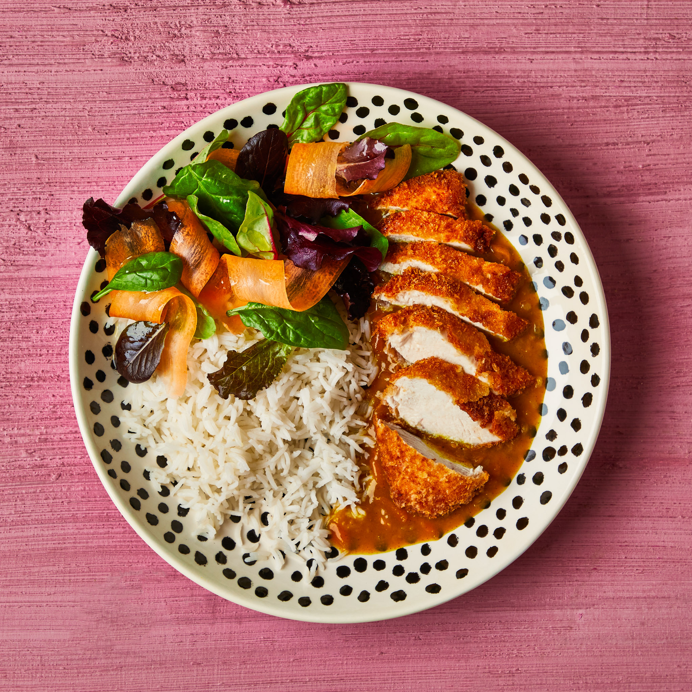

Chicken Katsu

Description
Katsu is a Japanese dish of crispy fried cutlets coated with Panko bread crumbs. Popular varieties are chicken katsu (like this recipe) and tonkatsu (which is made with pork).
Ingredients
- 4 skinless, boneless chicken breast halves - pounded to ½-inch thickness
- salt and pepper to taste
- 2 tablespoons all-purpose flour
- 1 egg, beaten
- 1 cup panko bread crumbs
- 1 cup oil for frying, or as needed
Steps
- Gather all ingredients.
- Season chicken breasts on both sides with salt and pepper.
- Place flour, beaten egg, and panko crumbs into separate shallow dishes.
- Coat chicken breasts in flour, shaking off any excess; dip into egg, and then press into panko crumbs until well coated on both sides.
- Heat oil in a large skillet over medium-high heat. Place chicken in the hot oil, and fry until golden brown, 3 or 4 minutes per side. Transfer to a paper towel-lined plate to drain.
- Serve and enjoy.
Home